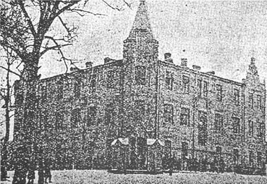
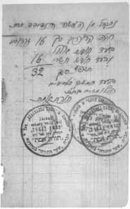
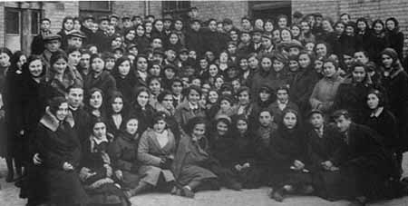

Lost Jewish Worlds |
|||||
|
Home | |
Grodno to WWI | |
Between the Wars . . . 1. Demographic Changes 2. Antisemitism & Pogroms 3. Education & Religion 4. Cultural Life 5. Political Activity |
| Under Soviet Rule | |
German Occupation . . . 1. Fall of the City 2. Deportations to the Ghetto 3. Confiscation & Forced Labor 4. Liquidation of the Ghetto 5. Underground Activities 6. After the War |
| Bibliography |
BETWEEN THE WORLD WARS - 3
The synagogue choir with conductor Shraga Feiwel Berezowski
In the final two decades of its existence, the Grodno Kehillah was the site of the renowned Sha’arei Torah yeshivah. Founded during World War I under the German occupation by and at the initiative of the students themselves, the yeshivah was originally headed by Rabbi Alter Shmuelevicz. His successor between 1920 and 1939, the famous scholar Rabbi Shimon Shkop, raised the level of the institution and transformed it into one of the finest yeshivot in Poland and beyond. Hundreds of young men flocked to Sha’arei Torah from near and far. Rabbi Shkop’s novellae on the Talmud are still studied in yeshivot throughout the world today.
Education. The Jewish educational system in Grodno consisted of a large variety of elementary and high schools, both general and professional, as well as hadarim and yeshivot. They were associated with a broad range of ideological tracks. In practice, only the affluent could take full advantage of the large selection of educational institutions. Parents with limited means could not afford the high tuition fees demanded by most of the Jewish schools, which were forced to operate as private schools as a result of the government’s policy. The state-run elementary schools, which operated in accordance with the compulsory education law (children had to attend school until Grade 7 in cities and until Grade 4 in rural areas), were open to everyone, including Jewish children. The government also placed at the Jews’ disposal a number of elementary schools of their own (which were known as “Shabatovka” because there were no classes on the Sabbath). Nevertheless, it was no simple matter for Jewish children to be admitted to government-run schools.
The overriding problem, however, was that the Jews were effectively deprived of the right to run a separate educational system under government auspices and had to finance most of their educational institutions, and particularly the high schools, with their own resources. As a rule only Jewish schools in which the language of instruction was Polish and in which the Polish educational format prevailed were able to receive government recognition. Even then this was only with great difficulty. Jewish parents who wanted to give their children a high-school education had practically no choice but to establish their own schools.
Any survey of the Jewish private educational institutions should begin with the schools of the Tarbut system, founded by the Zionists. They began operating in Grodno in 1922, and, within a few years, established two kindergartens, an elementary school, a high school, and a teachers’ college. Hebrew was the language of instruction in all Tarbut institutions. Most of the teachers, including the high-school principal, David Brawer, were from Galicia. In 1927, one-third of the city’s Jewish children attended a Tarbut school. However, the absence of outside funding kept tuition fees high, and although partial scholarships were available, these schools were not a realistic option for the poor.
In Grodno, as in many other locales that had previously been situated in Poland’s eastern frontier area, the percentage of children attending private schools was high from the outset, as compared with Congress Poland and Galicia. The reason was that the Russians, too, ran few government schools, and Jews were not readily admitted.

The Jewish old-age home

The Jewish orphanage
The Jewish hospital
Grodno had a Talmud Torah boys’ school with an enrollment of about 600 in the 1930s. Many of the pupils were from poor families who lived in the Shulhoif. Instruction was conducted in three languages: Polish, Yiddish, and Hebrew. The teachers belonged to different streams: assimilationists from Galicia, Bundist-Yiddishists, Zionists and Poalei Zion Left. Pupils in the Talmud Torah wore uniforms and ate a communal breakfast. Financing came from the Kehillah budget, but was insufficient. The institution was constantly in economic difficulties, and the teachers, who did not receive a regular salary, frequently went on strike; for a time the school was even in danger of closing.
A yeshivah near the synagogue
Rabbi Shimon Shkop, head of
the Sha'arei Tohrah yeshivah
The Sha'arei Torah yeshivah

Receipt for a contribution to the Talmud Torah school, 1927
Preparing an exhibition at the CISHO school, 1938/9
Class in the Yavneh school, 1939
Jewish High Schools. Grodno had two Jewish high schools, one run by Tarbut and the other a “re’ali ” (science-oriented) school. The Tarbut school, with its Hebrew-Zionist character and Hebrew as the language of instruction, was not recognized by the government. Thus it received no state aid, nor were its graduates entitled to a state diploma; those who wanted a high-school graduation diploma had to sit for external examinations in Vilna or Warsaw. Nevertheless, the Tarbut high school was known for its high academic level and was a popular institution.
In the “re’ali ” high school the language of instruction was Polish, assuring it government recognition and enabling students to take the final examinations of the state system. Tuition was steep, however children of civil servants were exempt from payment. The school had high academic standards and a rich extracurricular program, including a choir and orchestra, sports activities (there were volleyball and ping-pong teams), and so forth. The school’s history department even published a history of Grodno in 1,000 copies, with proceeds from sales going toward the building of a history library and reading room.
Vocational Schools. As a result of the Polish government’s discriminatory policy, which prevented Jewish youngsters from attending institutions of higher education and entering academic professions, many turned to vocational studies. This was the case not only within proletarian families but also among those who had completed or partially completed high school.
In 1924, the ORT vocational school for Jewish boys in Grodno (founded 1911) had ninety-four pupils. The academic level was high, and, in addition to vocational workshops, pupils also studied Polish, mathematics, physics, mechanics, draftsmanship, and other subjects. About half the budget was financed by ICA; the rest came from tuition fees, the Joint Distribution Committee, donations, and the sale of products made in the workshops, which were known for their high quality (even the army ordered certain items from the school). Between 1925 and 1930, many of the school’s graduates, assisted by the school’s administration and the world ORT organization, went to France in order to specialize. Some of them remained there during World War II. Many settled in Eretz Israel or in other countries.
In 1922, ORT opened a vocational school for girls in Grodno, teaching mainly sewing and other crafts.
Breakfast at the Talmud Torah school
Jewish arts and crafts school for girls
Class in the Tarbut Teachers' Seminary

The Teachers' Seminary students on the occasion of Chaim Nahman Bialik's visit
Not all the Jewish children in Grodno were able to continue their studies after elementary school. Many had to work in order to help support their families.
Home